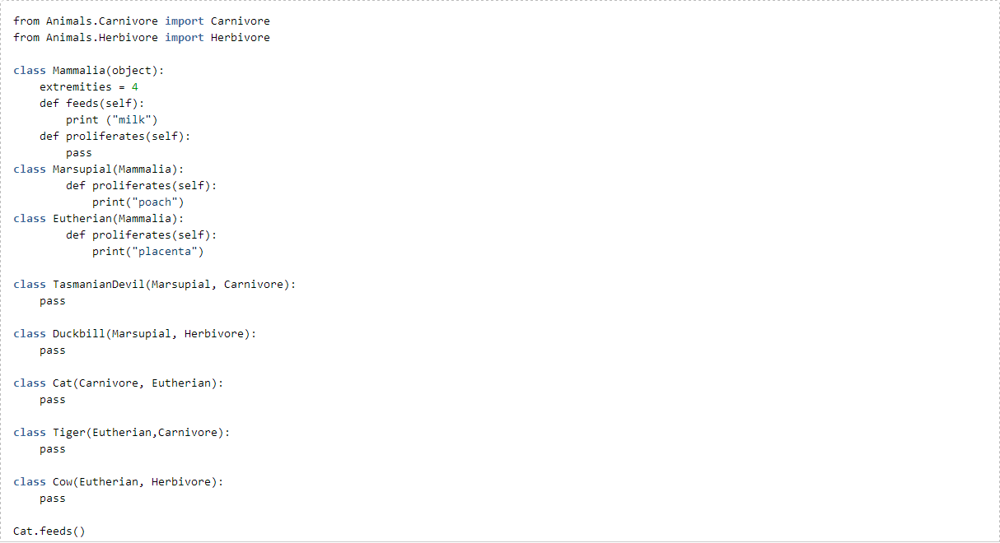
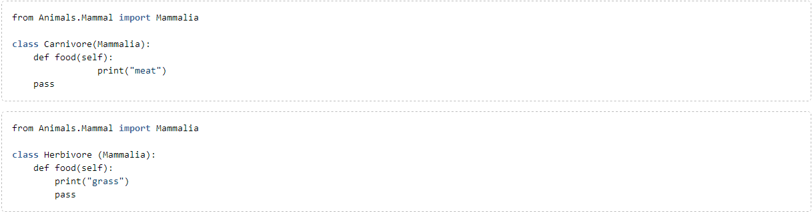
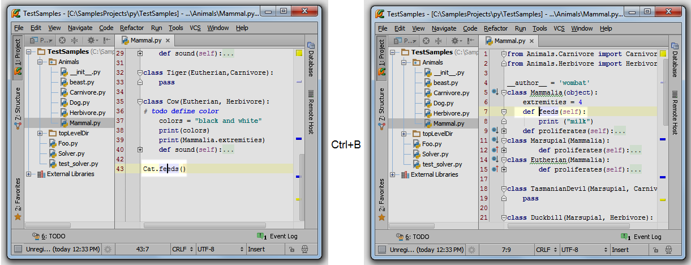
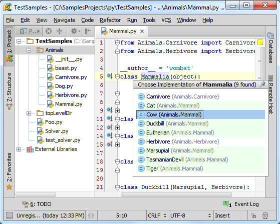
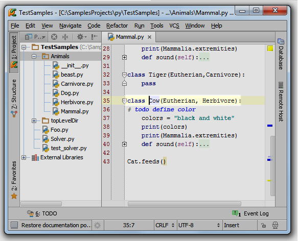
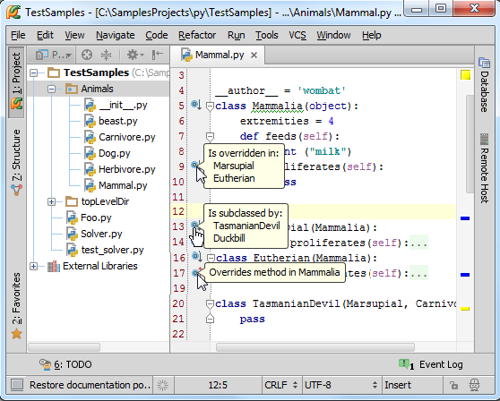
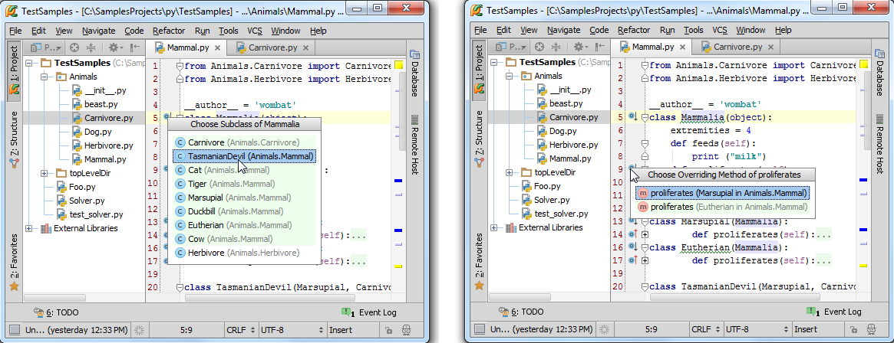
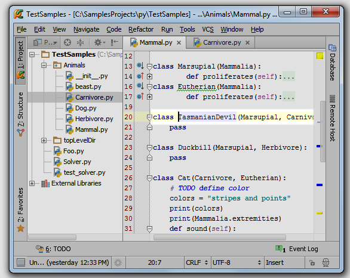

1、准备实例
（1）在工程目录下创建Animals模块（Alt+Insert→Python Package）：
（2）创建一个Python文件（Alt+Insert→Python File）：
在Mammals.py文件中输入以下代码：

在Carnivore.py, Herbivore.py文件中输入以下代码：

2、转到声明
将光标定位在Cat类实例的feeds（）函数名处，按下Ctrl+B。Pycharm会自动跳转到Mammalia类feeds成员的定义：

3、转到引用
接下来吧光标至于Mammalia类名称处，查找其所有引用。按下Ctrl+Alt+B，会看到Mammalia类的引用列表：

选择你想查看的引用（例如这里选择Cow），回车，Pycharm会跳转到对应引用位置：

如果你选择了位于另外一个文件中的引用，如Carnivore，Pycharm会在一个单独的编辑选项卡中打开它。
4、注意侧边图钉图标
之前我们已经预见过类似的图钉图标，例如在查看快捷文档时（Ctrl+Q），如果你单击这个图标，则整个弹出窗口会被固定。在这里则意味着所遇到的引用已经添加到 Find tool window窗口中进行显示。
5、左槽图标的导航功能
最后我们观察窗口左槽，这里有很多附有指向箭头的图标，意味着？
如果你将鼠标指针悬停在图标上面，Pycharm会显示其子类或者重载方法（向下的箭头）、父类（向上箭头）：

当你单击这个图标时，Pycharm会列出其子类或者重载方法（如果有的话）：

之后Pycharm会跳转到所选条目，并将光标至于对应的声明部分。如果只存在一个子类、父类或者重载函数，则默认执行跳转操作：
